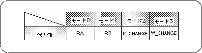
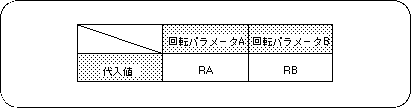

Return to previous page | Return to menu | Go to next page
In the case of a rotary scroll screen, some function settings are required in addition to the scroll function settings described above.
These function settings are necessary to use the functions specific to rotary scrolling.
● Rotation parameter setting
When using the rotary scroll screen, an area for storing and calling some information related to rotation is required, and this collection of information is called a rotation parameter.
Therefore, when using the rotary scroll screen, it is necessary to store the rotation parameters in VRAM as part of the scroll function settings (rotation parameter size: 100H).
Use the library function “slRparaInitSet” to specify the rotation parameter.
● Rotation parameter use mode
There are two types of rotation parameters, rotation parameter A and rotation parameter B. These two types of rotation parameters are stored together in the area reserved by the function “slRparaInitSet”. Since there are two types of rotation parameters, the rotary scroll holds two types of status data at the same time, and at the time of drawing, one of these two can be selected and drawing on the monitor can be executed. Become.
The user can select how to use the rotation parameters from the following four rotation parameter usage modes.
Mode 0: Use rotation parameter A Mode 1: Use rotation parameter B Mode 2: The image is switched according to the coefficient data read from the coefficient table of the rotation parameter A Mode 3: Switch by rotation parameter window

Note) The values in the above table are defined in “sl_def.h” included with the system.
● Change current rotation parameter
Among the functions used for rotary scrolling, those whose function name ends with “R” will set the function of each function for the current rotation parameter, but the current rotation parameter will be set to the function “slCurRpara”. By switching with “”, the function can be set individually for each of the rotation parameters A and B.
If the function name ends with “RA” or “RB”, the setting is made for the rotation parameter indicated by the end of each function name.

Note) The values in the above table are defined in “sl_def.h” included with the system.
Caution
For details on rotation parameters, refer to “HARDWARE MANUAL vol.2”
(VDP2 User's Manual)